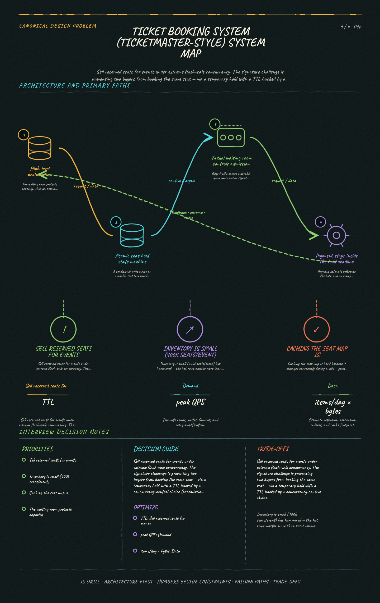
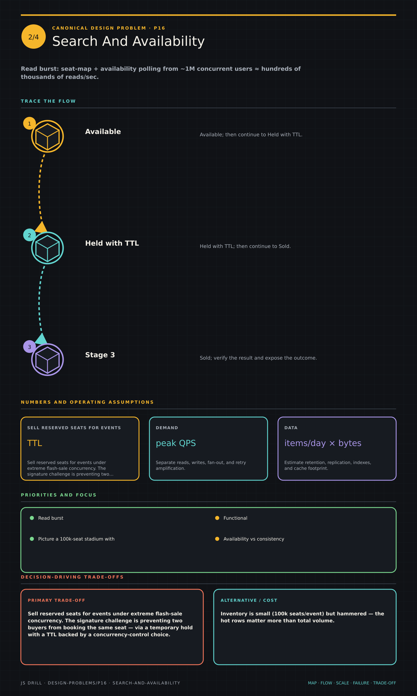
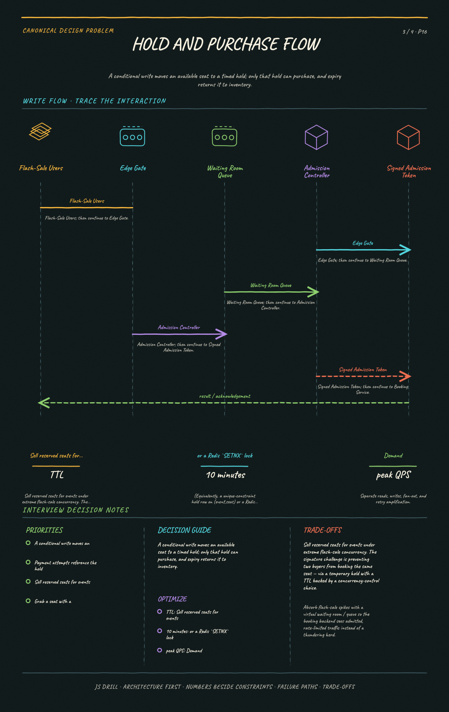
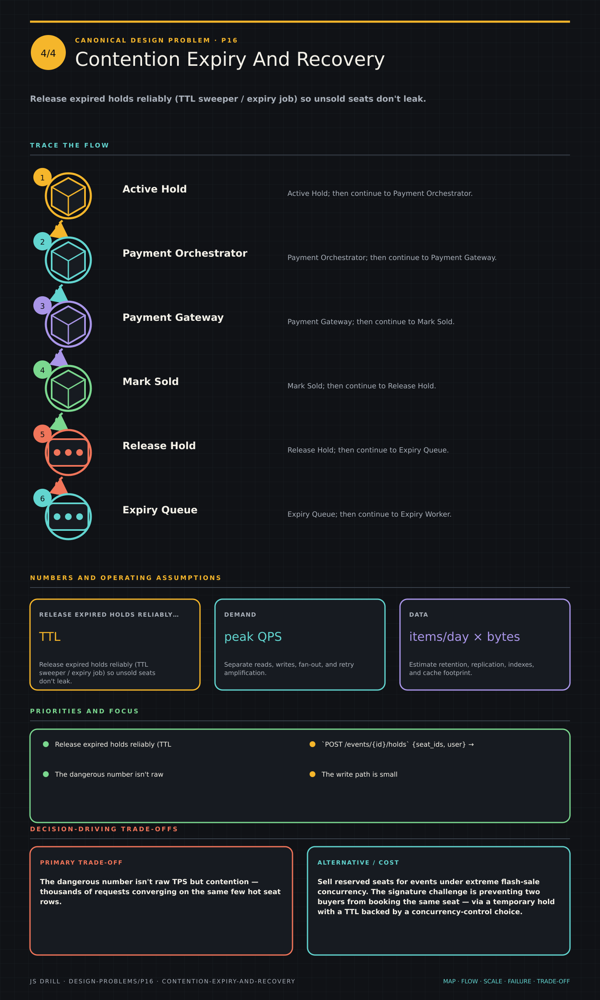

Design a Ticket Booking System (Ticketmaster-style)
Sell reserved seats for events under extreme flash-sale concurrency. The signature challenge is preventing two buyers from booking the same seat — via a temporary hold with a TTL backed by a concurrency-control choice (pessimistic lock vs optimistic vs reservation) — while a virtual waiting room absorbs the spike and payment completes within the hold window.
Canonical Design Problems9 questions
Results carried by this link
The brief
Functional requirements
Browse events, view a seat map with availability, hold seats, pay, receive a confirmed booking; cancel/refund.
No seat may ever be double-booked — strong consistency on inventory.
Clarify: reserved seating vs general admission, hold duration, one event or global scale.
Scale & constraints
Averages mislead — the system is defined by the on-sale burst
A 100K-seat stadium with 1M+ fans arriving in the first minute
Seat-map and availability reads spike to hundreds of thousands per second
The dangerous number is contention, not raw TPS: thousands of requests converge on the same few hot seat rows
Total inventory is tiny (100K seats) yet brutally hammered — size for the peak and throttle admission to what booking can safely serialize
Key ideas
The core invariant: a seat is sold at most once, even when thousands hit 'buy' for it in the same second.
Model seats explicitly as inventory with states: available → held (reserved with a TTL) → booked.
Grab a seat with a short-lived hold/reservation (TTL, e.g. 5–10 min) so the user can pay; if payment doesn't complete, the hold expires and the seat returns to the pool.
Enforce single-booking with a concurrency-control choice: pessimistic DB lock (SELECT ... FOR UPDATE), optimistic concurrency (version/CAS), or an atomic hold record with a unique constraint.
Absorb flash-sale spikes with a virtual waiting room / queue so the booking backend sees admitted, rate-limited traffic instead of a thundering herd.
Integrate payment inside the hold window; on success finalize the booking, on timeout release the hold.
4 study sheets · 4 authored diagrams (source below, rendered in the app).

Ticket Booking System (Ticketmaster-style) system mapSystem mapGive ticket booking system (ticketmaster-style) system map enough room to trace independently, including scale, failure behavior, and the decision-driving trade-offs.Open the full-size image

Search And AvailabilityRead flowGive search and availability enough room to trace independently, including scale, failure behavior, and the decision-driving trade-offs.Open the full-size image

Hold And Purchase FlowWrite flowGive hold and purchase flow enough room to trace independently, including scale, failure behavior, and the decision-driving trade-offs.Open the full-size image

Contention Expiry And RecoveryFailure and recoveryGive contention expiry and recovery enough room to trace independently, including scale, failure behavior, and the decision-driving trade-offs.Open the full-size image
High-level architecture mermaidoverview
The waiting room protects capacity, while an atomic inventory store enforces exactly one active hold or sale per seat.
flowchart LR
C["Client"]
WR["Virtual Waiting Room"]
Q[["Admission Queue"]]
API["Booking Service"]
INV[("Seat Inventory DB")]
SW["TTL Sweeper"]
PAY["Payment Service"]
C -->|"on-sale burst"| WR
WR --> Q
Q -->|"rate-limited admit"| API
API -->|"atomic hold claim"| INV
API --> PAY
SW -.->|"release expired holds"| INV
Atomic seat hold state machine mermaidlifecycle
A conditional write moves an available seat to a timed hold; only that hold can purchase, and expiry returns it to inventory.
flowchart LR
A[Available] -->|"atomic hold"| H[Held with TTL]
H -->|"payment succeeds"| S[Sold]
H -->|"TTL expires"| A
H -->|"payment fails"| A
Edge traffic enters a durable queue and receives signed admission tokens at the rate the booking tier can safely process.
flowchart LR
U[Flash-Sale Users] --> E[Edge Gate]
E --> Q[[Waiting Room Queue]]
Q --> A[Admission Controller]
A --> T[Signed Admission Token]
T --> B[Booking Service]
B --> I[(Inventory Store)]
Payment stays inside the hold deadline mermaidfailure
Payment attempts reference the hold, and an expiry worker releases abandoned holds idempotently without racing a completed purchase.
flowchart LR
H[(Active Hold)] --> P[Payment Orchestrator]
P --> G[Payment Gateway]
G -->|"success"| S[Mark Sold]
G -->|"failure"| R[Release Hold]
H --> T[[Expiry Queue]]
T --> E[Expiry Worker]
E --> R
Questions 9
Positions 1–9 of the code. Open questions are answered out loud and self-graded, so their characters are Y / p / n rather than option letters.
Scope a ticket booking system (Ticketmaster-style). What are the functional requirements, and which non-functional constraint defines the problem?
Points a strong answer hits:
Functional: browse events, view a seat map with availability, reserve/hold seats, pay, and receive a confirmed booking; cancel/refund.
The defining constraint is correctness under extreme concurrency — no seat may be double-booked.
Traffic is extremely spiky/bursty: flash sales where millions arrive the instant tickets drop.
Consistency on inventory must be strong; overselling a seat is unacceptable, unlike a like-count.
Read-heavy browsing, but the booking write path is the contended, hard part.
Clarify: reserved-seating vs general admission, hold duration, one event or global scale.
Model answer: Functionally: browse events, see a live seat map, hold seats, pay, and get a confirmed ticket, plus cancel/refund. The problem is defined by correctness under extreme, bursty concurrency — when tickets for a hot event drop, millions hit 'buy' in the same second, and no seat may ever be sold twice. Inventory therefore needs strong consistency; overselling is unacceptable in a way a stale like-count never is. Browsing is read-heavy and easy to scale, but the contended booking write path is the whole challenge. I'd confirm reserved-seating vs general admission, the hold duration, and whether we're sizing one mega-event or a global catalog.
Estimate the scale, emphasizing the flash-sale burst rather than steady-state averages.
Points a strong answer hits:
Steady state is modest, but a hot on-sale is a spike: e.g. 100k-seat stadium, 1M+ fans queuing in the first minute.
Read burst: seat-map + availability polling from ~1M concurrent users ≈ hundreds of thousands of reads/sec.
Write burst: booking attempts concentrated on the same event's seats — the contention, not raw TPS, is the killer.
Inventory is small (100k seats/event) but hammered — the hot rows matter more than total volume.
Payment throughput bounded by seats × turnover within hold windows.
Design for peak burst (waiting room throttles it), not the daily average.
Model answer: Averages mislead here — the system is defined by the on-sale burst. Picture a 100k-seat stadium with 1M+ fans arriving in the first minute: seat-map and availability reads spike to hundreds of thousands per second, and booking attempts pile onto the same event's seats. The dangerous number isn't raw TPS but contention — thousands of requests converging on the same few hot seat rows. Total inventory is tiny (100k seats) yet brutally hammered, so we size for the peak burst and use a waiting room to throttle admitted traffic down to what the booking backend can safely serialize, rather than provisioning for a mythical steady average.
Hold state carries a TTL (hold_expires_at) that a sweeper enforces.
State machine per seat: available → held → booked (or back to available on expiry/cancel).
Model answer: The write path is small: POST /events/{id}/holds with the chosen seat_ids attempts a hold and returns a hold_id + expiry (or 409 if a seat's already taken), POST /holds/{id}/confirm finalizes with payment, and DELETE /holds/{id} releases. The data model centers on a Seat row per (event_id, seat_id) carrying state (available/held/booked), held_by, hold_expires_at, and a version column for optimistic concurrency, plus a Booking row linking user, seats, status, and payment. Each seat is a little state machine — available → held → booked — that falls back to available when the TTL expires or the user cancels.
Two users click the same seat within milliseconds. Which concurrency-control approach best prevents a double-booking at flash-sale scale, and what's the tradeoff?
A Pessimistic SELECT ... FOR UPDATE on every seat row for the whole browse-plus-payment session — simplest and safe at any scale.
B A short-lived atomic hold (conditional update / row lock or unique-constraint reservation with a TTL) taken instantly; the loser gets a 409 and the seat frees on expiry — locks are held only for the microsecond claim, not through payment. correct
C Optimistic concurrency with no holds: let both proceed and sort out the conflict only at payment time.
D Eventual consistency: accept both bookings and cancel one later via a background reconciliation job.
Why: The winning pattern is a short atomic claim that flips the seat available→held in one race-safe step (a conditional/FOR UPDATE update or a unique-constraint insert on (event,seat)), giving the loser an immediate 409, with a TTL so the seat returns if payment stalls. Crucially the lock or claim is held only for the instant of the state flip, not across the user's payment — holding a pessimistic DB lock through a multi-minute checkout would serialize and collapse under flash-sale load. Pure optimistic-until-payment wastes users' time by letting many people pay for a seat only one can get, and eventual consistency literally oversells, which is unacceptable.
Deep dive: design the hold/reservation mechanism that prevents double-booking. How is the claim made atomic, and how is the TTL enforced?
Points a strong answer hits:
Claim atomically: UPDATE seat SET state='held', held_by=?, expires_at=now()+TTL WHERE seat_id=? AND state='available' — succeeds for exactly one racer (rows-affected=1 wins).
Alternatively a unique-constraint hold record on (event_id, seat_id) so a duplicate insert fails, or a distributed lock (Redis SETNX with TTL).
The atomic conditional update is the linchpin: the DB serializes the two writers so only one flips available→held.
TTL (e.g. 5–10 min) gives the winner time to pay without locking the seat forever.
Enforce expiry with either a lazy check (treat expired holds as available on next claim) + a background sweeper that resets timed-out holds.
On confirm, transition held→booked only if the hold is still valid and owned by that user.
Idempotency on confirm so a retry doesn't double-book or double-charge.
Model answer: The claim is a single conditional write — UPDATE seat SET state='held', held_by=?, expires_at=now()+ttl WHERE seat_id=? AND state='available' — where the database serializes the two racers so exactly one gets rows-affected=1 and wins; the other sees zero rows and gets a 409. (Equivalently, a unique-constraint hold row on (event,seat) or a Redis SETNX lock with TTL.) The TTL — say 5–10 minutes — lets the winner pay without freezing the seat forever. Expiry is enforced two ways: lazily, by treating a hold whose expires_at has passed as available on the next claim, and actively, via a background sweeper that resets timed-out holds. Confirm flips held→booked only if the hold is still valid and owned by that user, and it's idempotent so a retry never double-books or double-charges.
Deep dive: why add a virtual waiting room / queue, and how does it work during a flash sale?
Points a strong answer hits:
The problem: millions arrive simultaneously; hitting the booking DB directly is a thundering herd that overwhelms hot seat rows.
The waiting room admits users into the actual booking flow at a controlled rate the backend can serialize safely.
Users get a queue position/token; they're let through in batches (often FIFO with a token/cookie) as capacity frees.
Decouples the huge arrival burst from the bounded booking throughput — smooths the spike into a steady stream.
Provides fairness and a good UX (a real position beats random failures/timeouts).
Implemented with a queue (e.g. Redis/Kafka) + an admission controller issuing time-boxed entry tokens.
Protects downstream services (inventory DB, payment) from overload and cascading failure.
Model answer: During an on-sale, millions arrive at once, and letting them all pound the inventory DB is a thundering herd that melts the hot seat rows. The virtual waiting room sits in front and admits users into the real booking flow at a controlled rate the backend can serialize — each user gets a queue position and a token, and an admission controller (backed by a Redis/Kafka queue) lets them through in FIFO batches as capacity frees. That decouples the enormous arrival burst from the bounded booking throughput, smoothing the spike into a steady stream while giving users a fair, visible position instead of random timeouts. It's fundamentally back-pressure: protect the inventory and payment services from overload and cascading failure by throttling admission, not by scaling the contended write path infinitely.
How does payment fit inside the hold window, and how are expired holds released reliably?
Points a strong answer hits:
Once seats are held, the user has the TTL window (e.g. 10 min) to complete payment; a countdown is shown.
On successful payment: transition held→booked atomically and create the confirmed booking (idempotent on payment/hold id).
If payment fails or the window expires: release the hold, returning seats to available.
Release must be reliable: a TTL sweeper/expiry job (or lazy expiry on next claim) so abandoned holds don't leak inventory.
Handle the race where payment succeeds right as the hold expires — check hold validity in the same transaction as the booking; reconcile/refund if it truly lapsed.
Payment itself uses idempotency keys + auth/capture and may be async (webhook confirms), so the state machine must handle pending.
Model answer: Holding the seats starts the clock: the user has the TTL window (say 10 minutes, with a visible countdown) to pay. On success we atomically flip held→booked and create the confirmed booking, keyed idempotently on the hold/payment id; on failure or timeout we release the hold and return the seats to the pool. Reliable release is essential or inventory leaks — so a background TTL sweeper resets expired holds, backed by lazy expiry (a passed expires_at counts as available on the next claim). The nasty race is payment landing exactly as the hold lapses: we validate the hold in the same transaction that books the seat and, if it truly expired and the seat was reclaimed, reconcile by refunding. Payment uses idempotency keys and auth-then-capture and may confirm asynchronously via webhook, so the seat state machine has to tolerate a pending state.
During a flash sale, why prefer a waiting-room queue that admits users at a controlled rate over simply autoscaling the booking service to handle every request instantly?
A The bottleneck is contention on a fixed, tiny inventory (the seats), not stateless compute — more app servers just pile more concurrent writers onto the same hot rows; the queue caps admitted concurrency to what inventory can safely serialize. correct
B Autoscaling is impossible for stateless web tiers, so a queue is the only option.
C A queue makes the booking database strongly consistent, which autoscaling cannot.
D Autoscaling would violate PCI compliance during payment.
Why: Scaling the stateless app tier doesn't help because the real constraint is the fixed, contended inventory — there are only 100k seats and the same rows are hammered. Adding app servers just throws more concurrent writers at those hot rows, worsening lock contention and retries. The waiting room applies back-pressure, admitting only as many users as the inventory layer can serialize correctly, which protects the DB and payment services and turns a stampede into a manageable stream. Autoscaling and the queue address different layers; here the inventory contention is the wall.
Staff-level: what breaks at scale, and what are the key failure modes and tradeoffs?
Points a strong answer hits:
Hot-row contention on popular seats/sections is the fundamental limit — mitigate with the waiting room, fast atomic claims, and short lock durations.
Hold-expiry correctness: sweeper lag or clock skew can leak or prematurely release seats — combine lazy + active expiry; use a single authoritative clock/DB time.
Availability vs consistency: you choose consistency (never oversell), accepting that under overload some users are queued or rejected.
Payment failures inside the window and the expire-during-payment race — idempotency, reconciliation, refunds.
Caching the seat map is hard because it changes constantly during a sale — push updates / short TTL, tolerate slightly stale reads while keeping the CLAIM authoritative in the DB.
Multi-region: keep an event's inventory in one authoritative region to avoid cross-region double-booking; replicate reads.
Model answer: The fundamental wall is hot-row contention on the most-wanted seats, which the waiting room, fast atomic claims, and microsecond-short locks exist to manage. The subtle correctness risk is hold expiry — sweeper lag or clock skew can leak or prematurely free seats — so we combine lazy and active expiry and trust a single authoritative DB clock. We consciously choose consistency over availability: never oversell, even if that means queuing or rejecting users under overload. Real-world failure modes include scalper bots (rate limits, CAPTCHA, per-user caps), the payment-succeeds-as-hold-expires race (idempotency + reconciliation + refund), and the fact that the seat map changes constantly so reads can be slightly stale as long as the DB claim stays authoritative. And to avoid cross-region double-booking, each event's inventory lives in one authoritative region with reads replicated out.
Reading the s= code
If the URL you opened has an s= parameter, it is a result set: one character per question, in the order the questions appear on this page. Uppercase means credit, lowercase means no credit. The letter is the option index shown here — A is the first option listed.
Character
Meaning
A B C D
multiple choice — picked this option, correct
a b c d
multiple choice — picked this option, wrong
Y
open / typed / fill-in — got it
p
open — partial credit
n
open / typed / fill-in — missed
-
not attempted
One segment: every question on this page, in order.
The order of questions and options on this page is fixed and never changes, which is what makes position alone enough to identify a question. Nothing about the code is stored anywhere — it lives only in the URL its owner chose to share.
{kind=link}
{kind=link}
{kind=link}
{kind=link}